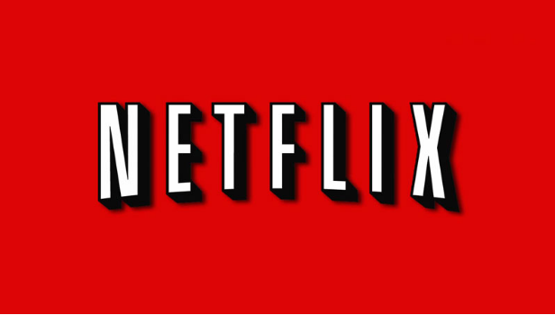

About Netflix
- Introudce Netflix
- These says of netflix
- how to use big source
Intriudce netflix
Netflix는 한 달에 적게는 7.99달러만 내면 영화와 TV 프로그램과 같은 영상 콘텐츠를
맘껏 볼 수 있는 온라인 동영상 스트리밍 서비스다. 명실상부한 세계 최대 사업자로,
유료 가입자만 5700만명에 이른다. 원래 미국에서 시작된 서비스지만,
가입자 5700만 중 1800만명이 해외 구독자다.
넷플릭스는 앞으로도 미국 방송 업계 석권을 넘어
해외 시장 개척에 적극 나서 성장세를 이어나갈 기세다.

“인터넷 + 영화 = 넷플릭스”
‘넷플릭스’라는 이름은 인터넷(NET)과 영화(flicks)에서 따왔다.
리드 헤스팅즈가 넷플릭스를 창업할 당시부터 인터넷으로 영화를 유통할 생각을 꿈꾸고 있었기 때문이다.
하지만 처음부터 스트리밍 방식으로 콘텐츠를 유통한 것은 아니다.
1997년 넷플릭스는 비디오와 DVD를 우편·택배로 배달하는 서비스로 시작했다.
인터넷 스트리밍까지 사업을 확장한 건 그로부터 10년 뒤인 2007년이다.
These days of Netflix
Neflex는 과거 블록버스터 시장을 잠식해 나갔던 것처럼 기존 지상파 방송과 케이블TV의 역할을 대체하고 있다.
지난 2013년에는 미국 최대 케이블방송 HBO의 가입자 수를 넘어섰다.
넷플릭스는 또한 돈을 지불하고 영상을 구독하는 서비스 가운데 미국에서 제일 많이 쓰는 플랫폼이다.
에릭슨이 지난 2014년 미국에서 주문형 동영상(VOD) 서비스를 이용하는 소비자 비율을 조사했더니, 넷플릭스 이용자가 전체의 50%에 달했다.
how to use big source
빅데이터를 활용한 컨텐츠 기획/제작
넷플릭스는 콘텐츠를 유통하는 플랫폼으로만 유명하진 않다.
성공한 콘텐츠 생산자이기도 하다.
넷플릭스는 2012년부터 콘텐츠를 제작사에서 구매해 제공하는 걸 넘어 자체적으로 콘텐츠를 만들어내기
시작했다. 빅데이터 강자인 넷플릭스는 콘텐츠를 만들 때도 빅데이터를 활용했다.
넷플릭스는 미국 시장 안에서 구독자의 선호도를 철저히 분석한다.